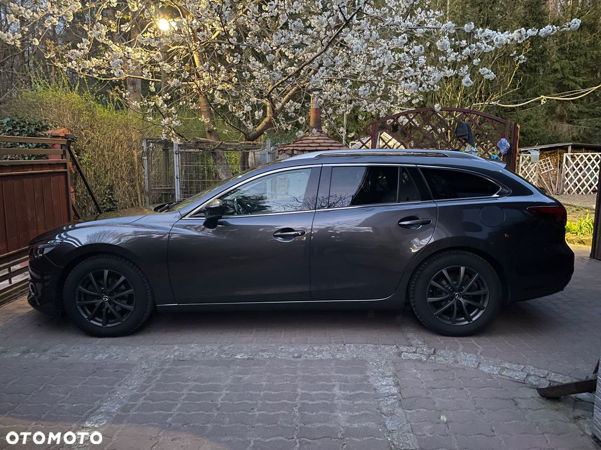
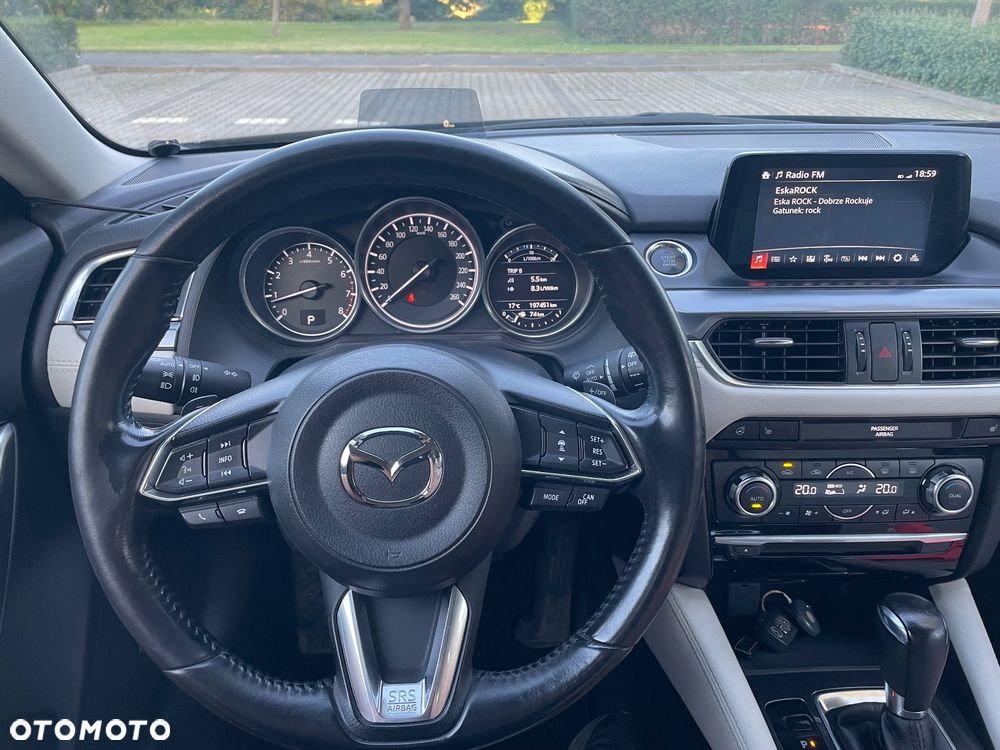
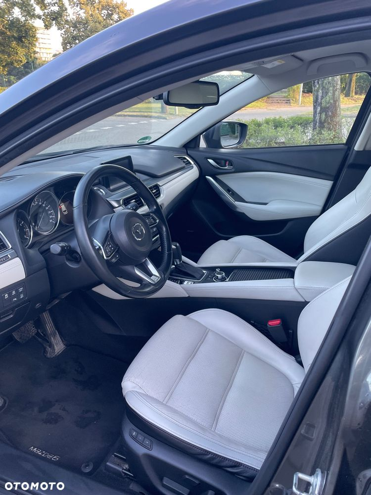
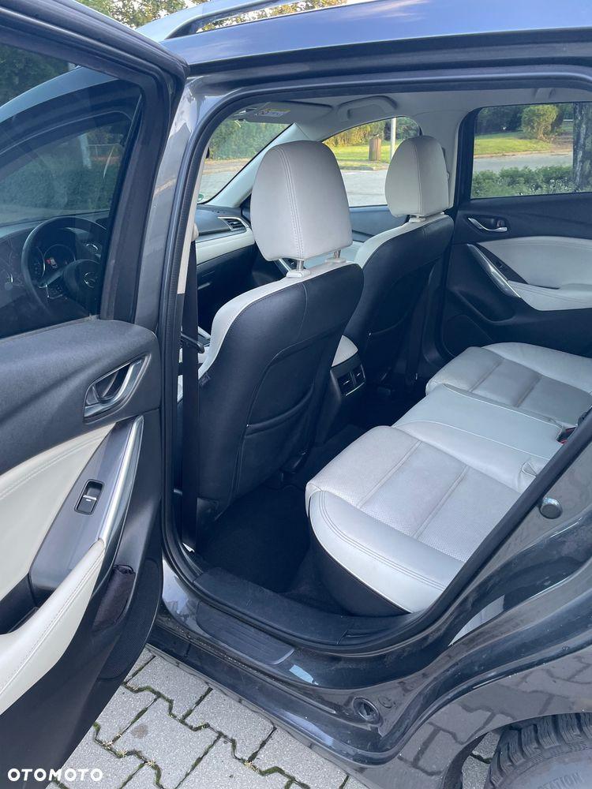
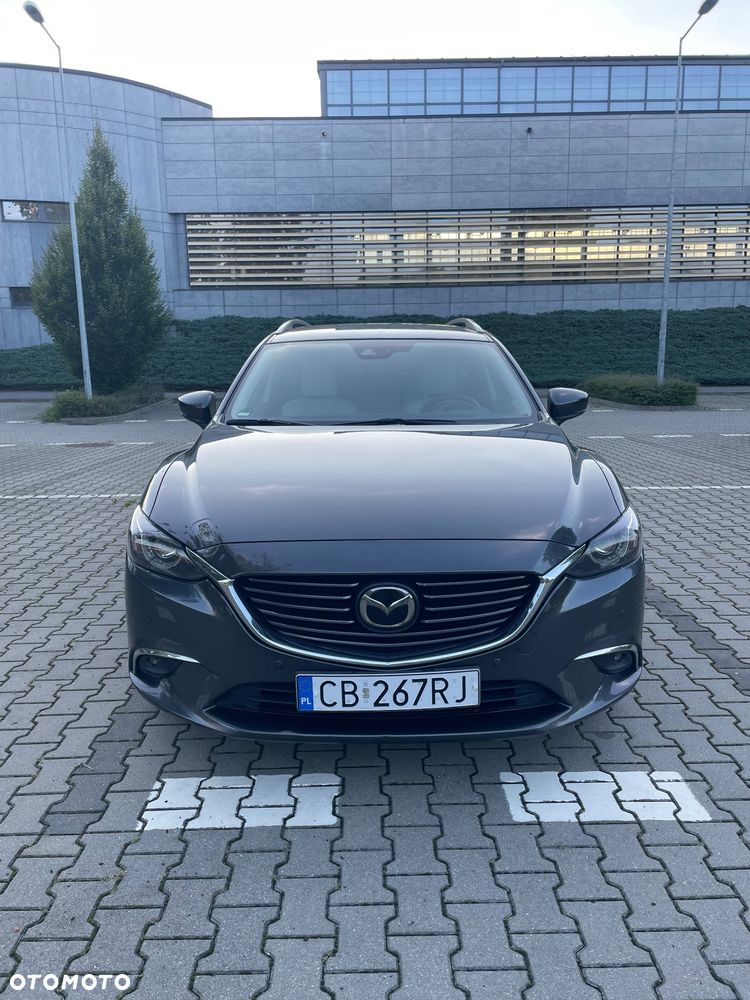
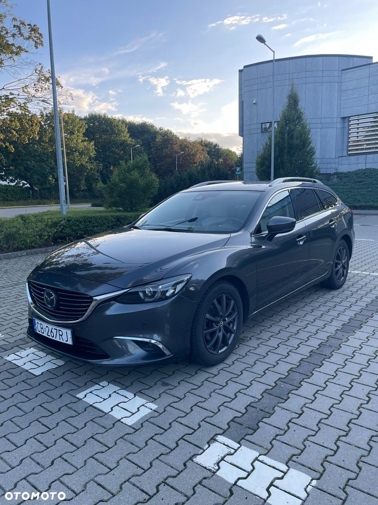
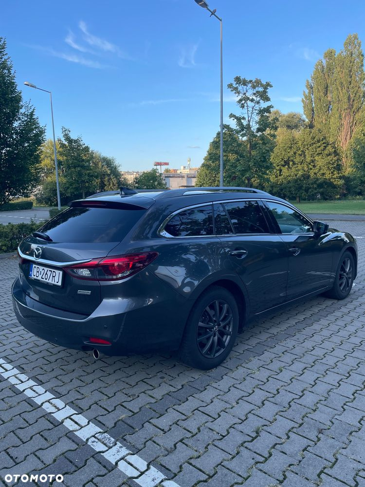
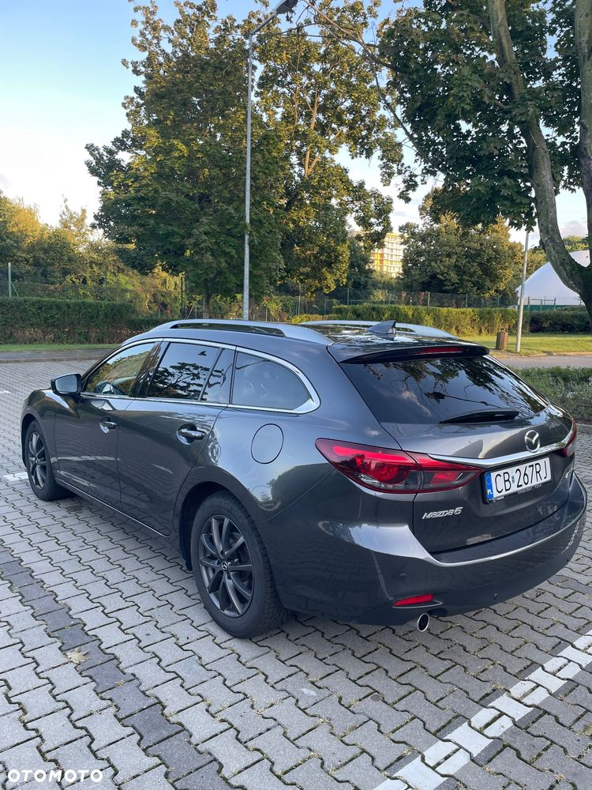
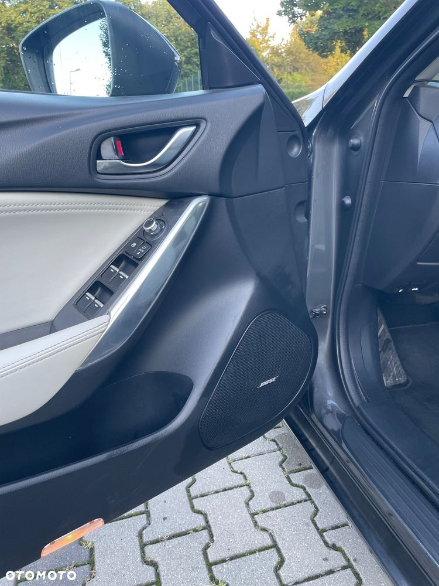
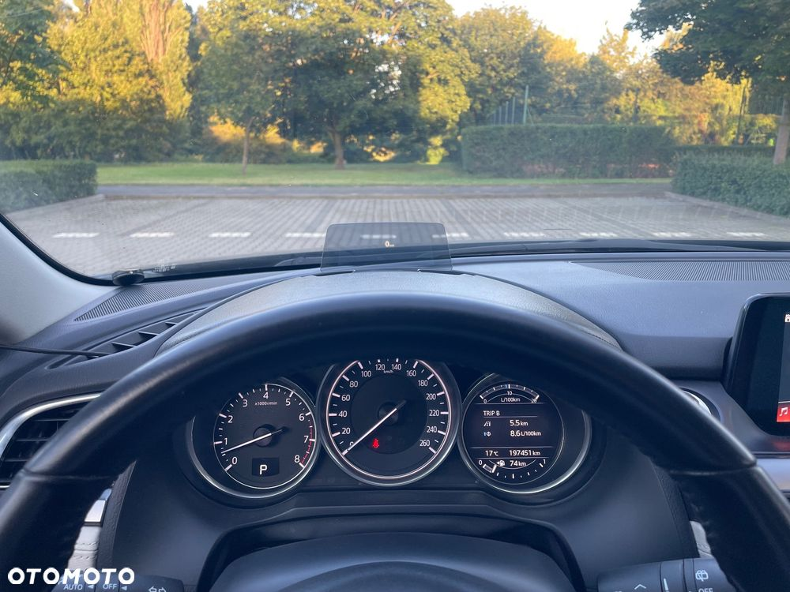

Sprzedam moją Mazdę 6 w bogatej wersji wyposażenia SkyPassion z automatyczną skrzynią biegów. Jestem osobą prywatną, a samochód użytkowany był przeze mnie na co dzień i jestem jej drugim właścicielem.Jest to wersja kombi z silnikiem benzynowym o pojemności 2488 cm³, generującym 192 KM. Przebieg wynosi 197 500 km. Mazda 6 trzeciej generacji, którą oferuję, została wyprodukowana w 2016 roku, ale modelowo to drugi lift -na rok 2017.
W pórównaniu do 1 liftu posiada dodatkowo: G-vectoring system, poprawione zawieszenie,kolorowy HUD, dodatkowy wyświetlacz TFT wysokiej jakości, rozpoznawanie znaków, grubsze uszczelki, podwójne szyby, nowa podgrzewana kierownica, asystenta pasa ruchu, płetwa rekina, SCBS z kamerką.
Dodatkowo posiada beprzewodowy Android Auto i Carplay oraz kamerę nagrywającą obraz przed autem.
Kolor machine grey nadwozia nadaje autu elegancki wygląd. Jest to egzemplarz bezwypadkowy, co potwierdza jego nienaganny stan techniczny. Nigdy nie było powtórnie lakierowane, ale w związku z tym ma lekko zarysowane tylne prawe nadkole.
Co ważne, pojazd ma polskie pochodzenie, co oznacza, że był od początku eksploatowany na naszych drogach i kupiony w polskim salonie w Poznaniu.
Auto jest w pełni sprawne i nie posiada ukrytych wad.Posiadam pełną historię serwisową DSR Mazda oraz wykupiony świeży raport CarVertical.
Olej w silniku (SupraX 0W20) i filtry (oryginalne), wymienione miesiąc temu. Olej w skrzyni (Ravenol ATF) ma przejechane 35tyś (filtr oryginalny Mazda), hamulce przeserwisowane 3 miesiące temu, płyn chłodniczy (Mazda FL22) ma rok. Świece zapłonowe-oryginał wymienione przy 108tyś, wahacze przód, oryginał przy 140tyś. Paski osprzętu-oryginał przy 160tyś km. Akumulator ma 2 lata.
Auto gotowe do dalszej bezproblemowej eksploatacji.












